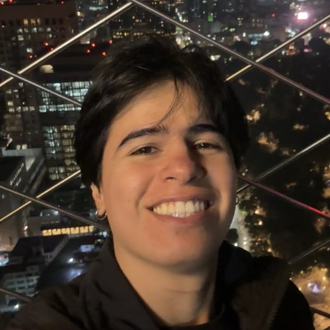
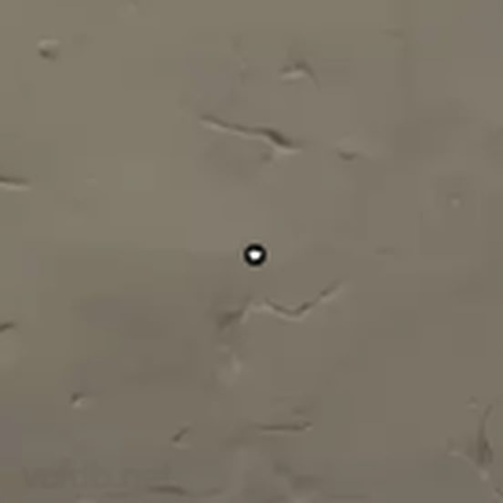
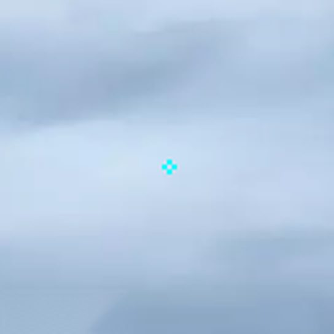
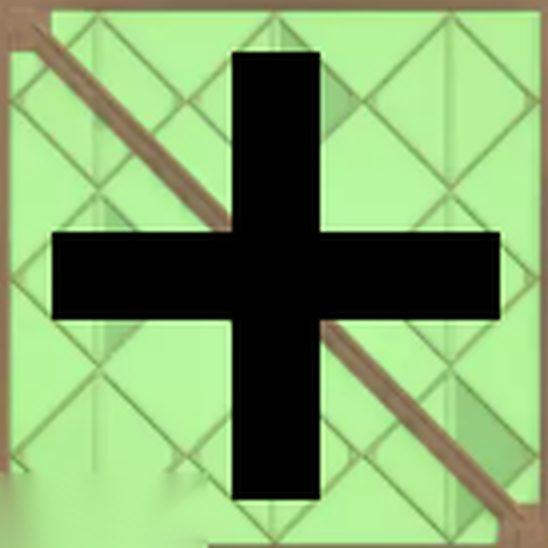
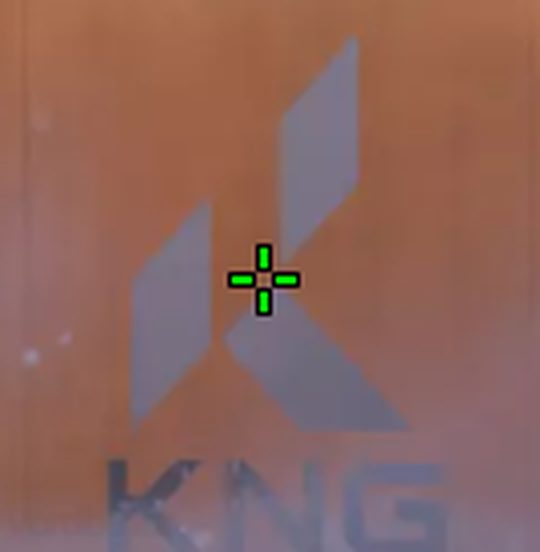
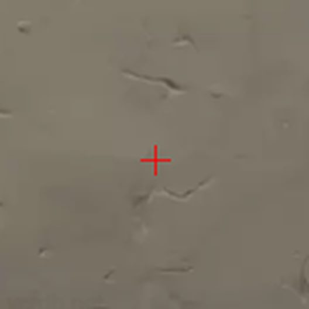

¿Cómo escoger tu crosshair en Valorant?

Respuesta corta
El crosshair o retícula es la referencia en tu pantalla para apuntar. Elige un tamaño balanceado: una muy pequeña se te puede perder en un duelo y una muy grande puede tapar al enemigo. La mayoría de los jugadores, incluso profesionales, prefieren una retícula estática. Al final, la retícula que escojas es tu preferencia: usa la que te sirva y con la que te sientas más cómodo. Estas son solo algunas cosas que puedes considerar.
Esto no es regla: es lo que me ha funcionado a mí siendo 3 veces Radiante.
Crosshair pequeño
Si usas una retícula pequeña, como la de un punto, el mayor problema es que la pierdas mientras estás en un duelo. Hay gente que, al ponerla encima de un enemigo, no sabe si está apuntando a la cabeza, al cuello o al pecho.
A otras personas les gustan mucho, porque son una referencia muy pequeña y precisa de dónde están apuntando. Si eres de los que pierden la retícula porque es muy pequeña, considera una mediana o grande.

Color
El color también es importante: una retícula de ciertos colores se puede perder en mapas específicos. Por ejemplo, una celeste en Icebox o una verde en Breeze. Tenlo en cuenta al elegir la tuya.

Crosshair grande
Con una retícula grande, el mayor problema es que en ciertas ocasiones tape al enemigo y no lo veas. Así que no exageres con el tamaño: mantenlo balanceado.

¿Estático o dinámico?
Estático
La preferencia de la mayoría de los jugadores, incluso profesionales, son las retículas estáticas, que no se mueven, porque una retícula que se mueve constantemente distrae.

Dinámico
Pero si eres de rango bajo, una retícula dinámica, que se mueve, te puede ayudar a familiarizarte con las mecánicas de precisión y disparo de Valorant, como lo explico aquí.
Por eso, si estás empezando, te recomiendo esta retícula que se mueve: también te ayuda a practicar mecánicas más complejas, como el dead zoning.
Código de la retícula que se mueve: 0;c;1;s;1;P;c;1;o;1;d;1;z;1;s;0;m;1;0t;1;0l;2;0v;2;0o;2;0a;1;0m;1;1b;0;S;s;0.5;o;1
El que uso yo
Yo uso una cruz roja estática pequeña, la que te muestro en el video.

Código de mi retícula: 0;s;1;P;c;7;h;0;d;1;z;1;0t;1;0l;5;0o;0;0f;0;1b;0;S;s;0.5
Preguntas frecuentes
¿Es mejor un crosshair estático o dinámico?
La mayoría, incluso profesionales, prefiere uno estático porque no distrae. Si eres de rango bajo, uno que se mueve te puede ayudar a aprender a quedarte quieto para disparar. Este es el código de la que recomiendo: 0;c;1;s;1;P;c;1;o;1;d;1;z;1;s;0;m;1;0t;1;0l;2;0v;2;0o;2;0a;1;0m;1;1b;0;S;s;0.5;o;1
¿Qué crosshair usa Gaviotache?
Gaviotache usa una cruz roja estática pequeña. Este es su código: 0;s;1;P;c;7;h;0;d;1;z;1;0t;1;0l;5;0o;0;0f;0;1b;0;S;s;0.5. Para principiantes recomienda una retícula que se mueve (código: 0;c;1;s;1;P;c;1;o;1;d;1;z;1;s;0;m;1;0t;1;0l;2;0v;2;0o;2;0a;1;0m;1;1b;0;S;s;0.5;o;1), porque ayuda a practicar mecánicas más complejas, como el dead zoning.